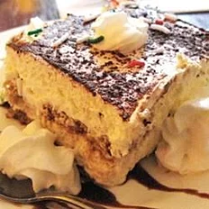

Tiramisu Recipe

The perfect end to the perfect meal
A simple recipe for a perfect italian side dish.
Ingedients
- 6 egg yolks
- 1 cup white sugar, divided
- 1 pound mascarpone cheese
- 6 egg whites, stiffly beaten
- ¼ cup heavy cream
- 3 tablespoons kirschwasser
- 1 ¼ cups strong brewed coffee, cold
- 25 ladyfingers
- 1 tablespoon unsweetened cocoa powder
Directions
- In a medium bowl beat together the egg yolks and 1/3 cup of sugar. Using a wooden spoon stir in mascarpone cheese, beaten egg whites, cream and kirschwasser; stir until smooth. Set aside.
- Dissolve remaining 2/3 cup sugar in coffee. Quickly, to avoid complete saturation, dip ends of ladyfingers in coffee mixture. Place ladyfingers in a single layer in a 9 x 13 inch glass baking dish. Spread a layer of cheese mixture over the ladyfingers; repeat layers, ending with cheese mixture.
- Cover and refrigerate for several hours. Sprinkle with cocoa just before serving.
Return to main page